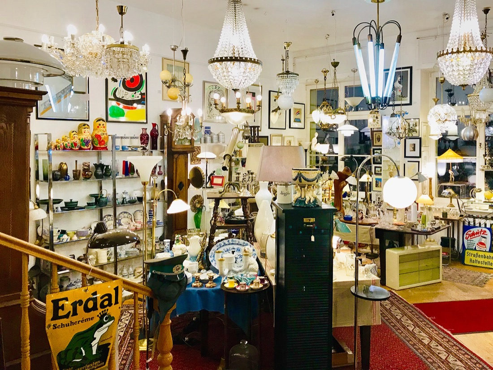

Antiquitäten
Dinge des vergangenen Alltags – von handwerklichem wie ästhetischem Reiz.
Bei kunst-a-bunt lässt sich ausgiebig „antiker“ Hausrat bewundern und manch wundervolles Stück für daheim erwerben:
- Glas: Wagenfeld-Glas und Gläser vergangener Zeiten
- Porzellan & Tafelgeschirr: u. a. Rosenthal
- Silberbesteck: WMF und August Wellner, samt Messerbänkchen
- Hausrat: Bücher, Teppiche, kleine Schätze für das Zuhause
Schauen Sie vorbei – das Sortiment wechselt ständig. So finden Sie uns →
